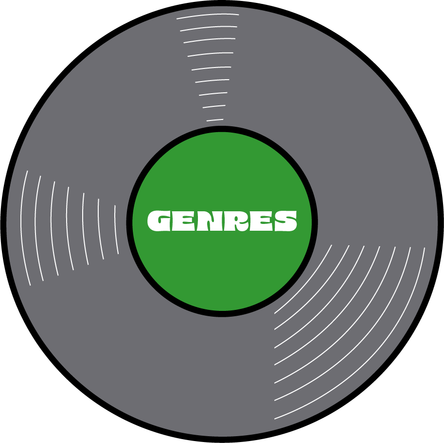
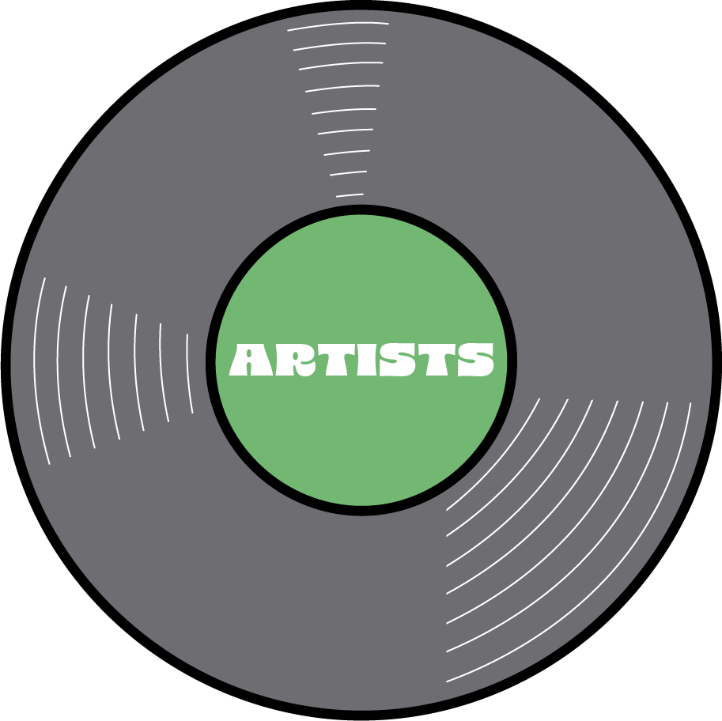
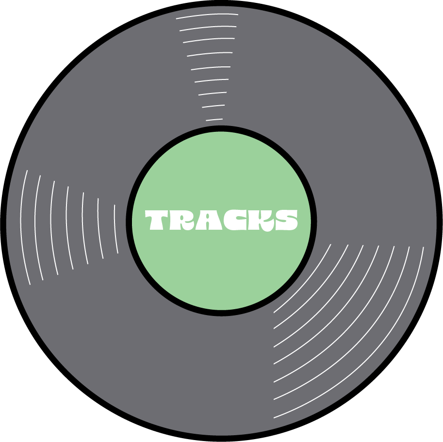

22.9% rap/hip hop; 16.1% rock; 15.3% pop; 14.4% funk/disco; 11.1% rock ballad; 7.6% house/electronic;
4.2% jazz; 2.5% r&b/soul; 2.5% theater; 1.7% indie; 1.7% folk/acoustic

Of 48
artists, the top 3
most-listened-to were
Prince, Madonna, and Stevie Wonder.

Of 118 tracks, the
most-listened-to song was
When Doves Cry.